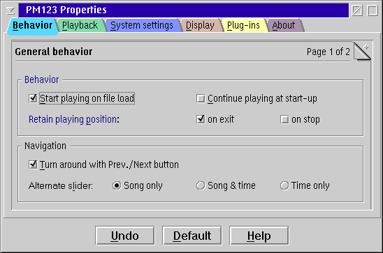

PM123's Configuration Settings 1/2

Behavior
- Start playing on file load
- Automatically starts playing when you load a file or playlist.
- Trash buffers on fast forward/rewind
- This option provides a much faster response on fast forward and rewind, but consumes more CPU time.
- Retain playing position
- You may keep the current playing position when you exit PM123 while playing and/or when you press the stop button.
The two options cause PM123 to continue playing at exactly the location where it stopped.
If you click "Retain playing position on stop", the only way to start over from the beginning
is to drag the slider to the start or to change the current song.
Playlists
- Auto 'play' on 'use playlist'
- Automatically starts playing when a playlist is loaded ("Use playlist").
- Auto 'use playlist' on add
- Automatically loads a playlist if items are appended to it.
- Recurse into subdirectories at drag & drop by default
- When you drop a folder to PM123 it will be added as a virtual playlist
that also contains the sub folders as virtual playlists.
- Sort folder content by name
- When a file system folder is opened by PM123 the files are always sorted by their name.
- Sub folders first
- Additionally the sub folders are placed before any file items.
Otherwise sub folders will show up between the files according to their name.
- Append to default playlist
- When you drop items to PM123 or call PM123 with a filename in the command line
(most likely by a association of the PMSHELL) you may append these items to the default
playlist instead of immediately replacing the currently playing file with the new song.
This may be used to enqueue songs.
- Queue mode
- In queue mode PM123 removes completely played items from the default playlist.
Together with "Append to default playlist" this offers an option to use the default
playlist as queue of items to play. This is similar to a printer queue.